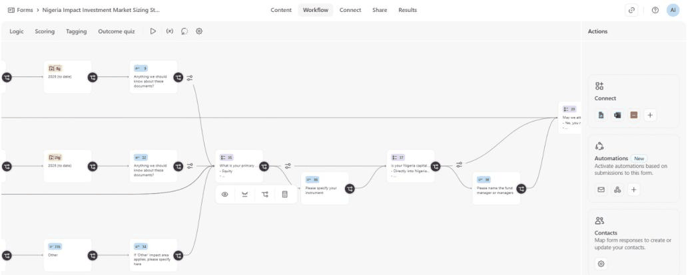

Impact Investors FoundationNigeria
Lead research and data analystReporting to the Regional Director for Africa
2025 to 2026Live engagement
158 organisations
Mapping the Nigerian impact investing market and sizing the capital flows
The first comprehensive attempt to quantify impact capital flowing into Nigeria. The problem is data-scarce by nature: there is no deal register, disclosure practice varies by fund, and the same naira can be counted three times if nobody fixes the definitions first.
- Designed the research protocol and the metric taxonomy that keeps assets under management, committed capital and deployed capital strictly separate, so no two figures in the report are silently measuring different things.
- Built the verified evidence base across roughly 62 investor organisations from a corpus of about 332 primary sources: development finance institution reports, fund disclosures and portfolio databases. Every extracted figure carries its printed page reference and a confidence grade.
- Built the primary collection system running across a 158-organisation respondent base: a 42-screen instrument with ten branching logic rules, feeding a live multi-tab data store through an automated response parser.
- Run the outreach cycle myself, sequenced with tiered escalation and follow-up, alongside a contact enrichment pipeline that resolves organisations to verified addresses.

Protocol designMetric taxonomyPythonTypeformn8nGoogle Sheets